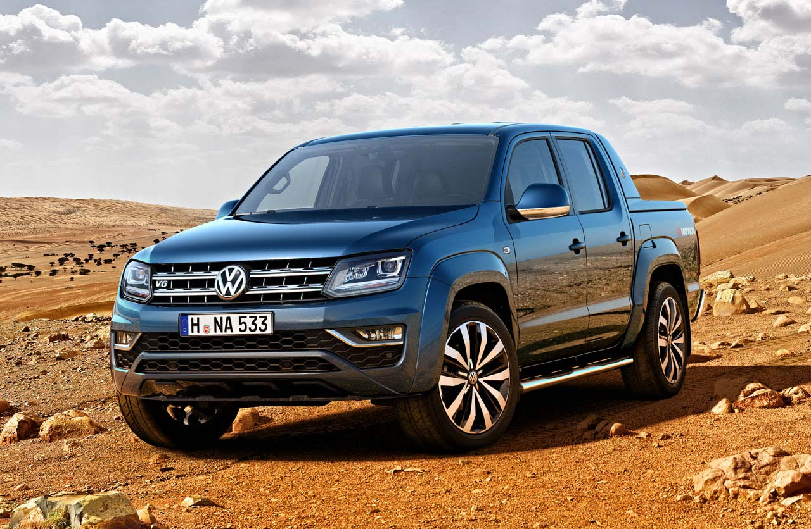
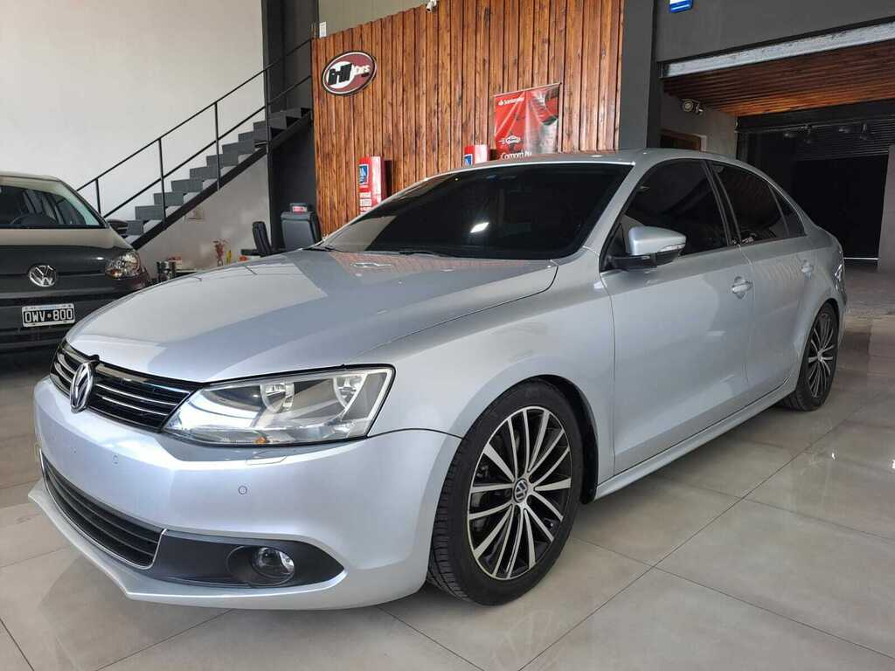
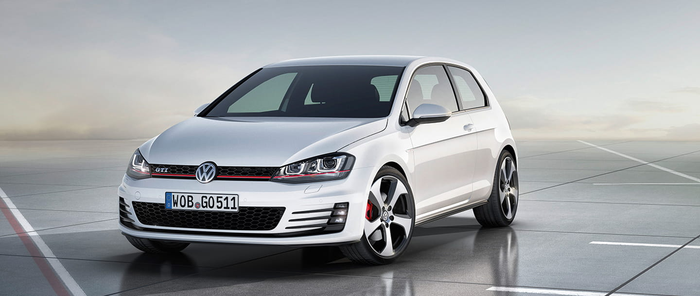
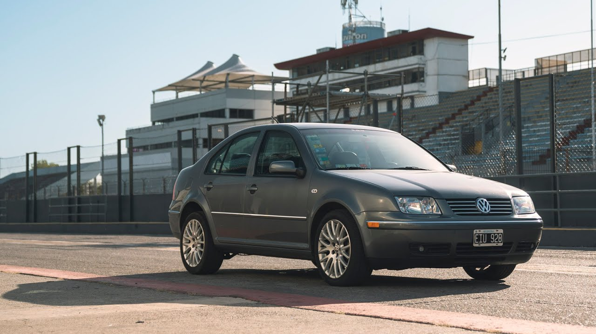
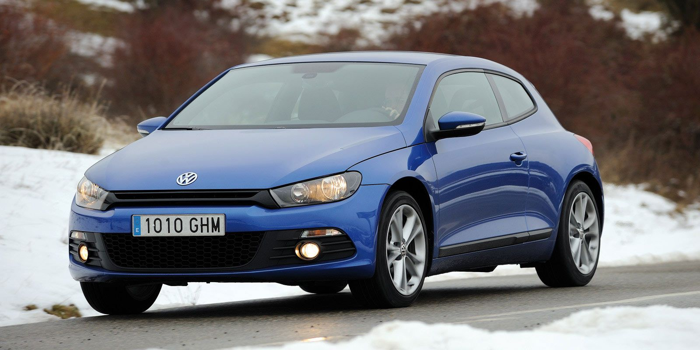

Volkswagen
Aleman, solo para entendidos. Siempre los vas a ver en la autopista haciendole luces a los a de adelante.
Amarok
- Motor: 3.0l TDI V6 de 258cv(3250-4000rpm)
- Tranmision: At de 8 vel.
- Traccion: AWD (4motion)
- Personalidad: 5
Vento 2.0 TSI
- Motor: 2.0l 4cyl. Turbo Nafta 200cv(6000rpm).
- Transmision: At DSG (Doble embrague) o Mt ambas de 6 vel.
- Traccion: FWD
- Personalidad: 6
Golf GTI
- Motor: 2.0l 4cyl. Turbo Nafta 230cv(4700rpm-6200rpm)
- Tranmision: At DSG (Doble embrague) de 6 vel.
- Traccion: FWD
- Personalidad: 8
Bora 1.8T
- Motor: 1.8l 4cyl. Turbo Nafta 180cv(5500rpm)
- Tranmision: Mt de 6 vel.
- Traccion: FWD
- Personalidad: 6
Scirocco 2.0 TSI
- Motor: 2.0l 4cyl. Turbo Nafta 211cv(5300-6200rpm)
- Tranmision: Mt de 6 vel.
- Traccion:FWD
- Personalidad: 8
-

- 
-

- 
- 